O que são os Heart Tanks?
Os Heart Tanks são itens especiais escondidos na maioria das fases que possuem um chefe principal.
Ao coletá-los, sua barra de energia máxima aumenta permanentemente, tornando as batalha
contra os chefes muito mais fáceis e estratégicas.
Explorar bem cada fase é essencial para encontrá-los, já que muitos estão escondidos em locais secretos
ou exigem habilidades específicas para serem alcançados.
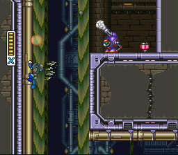
Toxic Seahorse
Esse é bem fácil. Ao subir aqui e dar de cara com esse robozinho chato
continue subindo mais um pouco e tá lá!
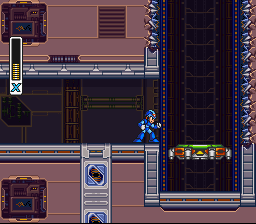
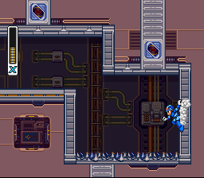
Volt Catfish
Ao se deparar com esse elevador, suba, com muito cuidado com o que tem aos lados e em cima, e entre na sala. Sabemos o quanto Mega Man não se dá bem com espetos desde o primeiro game, então com muito cuidado você vai se agarrar na parede a frente e vá deslizando para alcançar o Heart Tank que está no chão
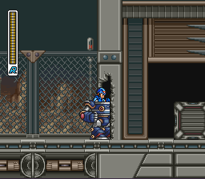
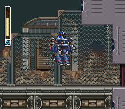
Blast Hornet
Após pegar a máquina, vá para a direita quebrando tudo que tem pelo caminho. Uma hora virá essa nave buscar caixas. Depois dela, continue indo para a direita. Chegando no final, pule e se solte do Carrier para se pendurar na parede acima.
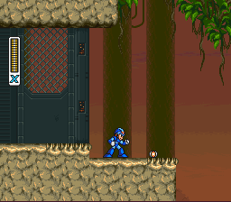
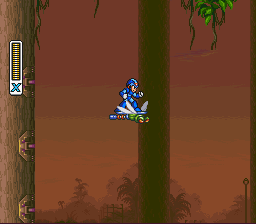
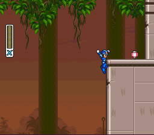
Neon Tiger
Ao chegar ao ar livre, neste ponto procure por estes "bichinhos" voadores e vá montado neles, sempre a direita. Heart Tank de grátis.
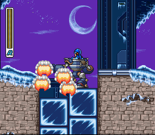
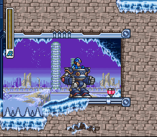
Blizzard Buffalo
Ao subir na primeira escada da fase, use o T fang para quebrar os blocos de gelo ao lado direito, caia nessa parte e tenha cuidado com os espinhos nessa sala, depois deles você vai achar o hert.
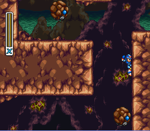
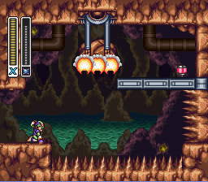
Tunnel rhino
O heart tank está atrás de uma pedra pendurada, use o Triad T carregado para o X dar um socão no chão, a pedra vai cair com isso(CAAABOOOMM!!!)
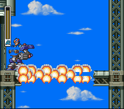
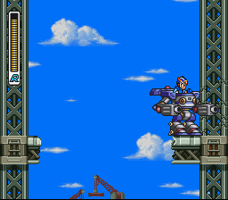
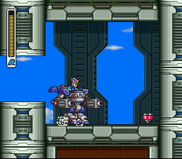
Crush Crawfish
No começo da fase, vá até a plataforma de robozões e escolha o H, avance até um ponte que é destruida pelo pengim voador, vá descendo devagar, você vai encontrar uma parede rachada, quebre ela com o robô e o heart vai estar lá.
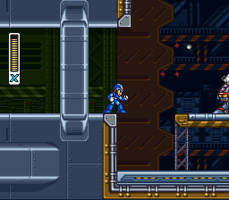
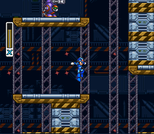
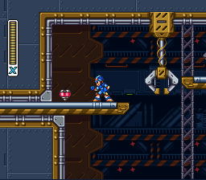
Gravity Beetle
Assim que enxergar o heart. Volte e suba aqui. Bem na pontinha, pule, dê o dash no ar com o Burner carregado e ainda no ponto máximo libere o Burner e se pendure bem na ponta acima dos espetos para pegar o tanque